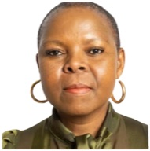

South Africa · Key player

Mahlengi Bhengu
ANC national spokesperson
Updated · 5 coalition pieces tracked
Who is Mahlengi Bhengu?
Mahlengi Bhengu (ANC national spokesperson) is one of the key players in the coalition talks after South Africa’s 4 November 2026 local government elections.
What has Mahlengi Bhengu said about the coalition talks?
- Said the NEC would weigh its negotiators’ report under the ANC’s 2023 coalition framework, and that any deal must deliver stable councils. Story: In public, Ramaphosa asks for good faith. In private, insiders say he wants the DA kept out of Joburg
- Denied any rift in the ANC over the KwaZulu-Natal talks. Story: MK talks to everyone, the DA included, but says it wants like-minded partners
What is Mahlengi Bhengu’s latest on the coalitions?
On 11 November 2026, Sunday Times: Bhengu: Ramaphosa has stated no preference on Joburg. Bhengu dismissed reports that Ramaphosa had told the ANC he preferred a Johannesburg coalition without the DA.
Every piece we track, newest first
Sunday Times · Statement Bhengu: Ramaphosa has stated no preference on JoburgBhengu dismissed reports that Ramaphosa had told the ANC he preferred a Johannesburg coalition without the DA.
SABC News · Statement ANC negotiating team denies coalition disagreement in KZNBhengu told SABC News there was no rift between the ANC’s structures and its provincial task team over the KwaZulu-Natal coalition talks.
eNCA · Statement ANC negotiators prepare to report to NEC as coalition talks gather paceBhengu said the negotiating team would report to the special NEC meeting, guided by the coalition framework the ANC adopted in 2023, and that any coalition must deliver stable councils and reliable services.
The Common Sense · Post ANC Does Not "Take Kindly" to DA "Threats", Says BhenguThe Common Sense reports ANC spokesperson Mahlengi Bhengu saying the ANC does not ‘take kindly’ to DA ‘threats’.
TimesLIVE · Column MAHLENGI BHENGU | When coalition politics benefits DA, it’s democracy. When it doesn’t, it’s betrayalANC spokesperson Mahlengi Bhengu argues that coalition politics is called democracy when it benefits the DA and betrayal when it does not.
Preamble summarises published reporting and links to every original. Mahlengi Bhengu does not write for Preamble, and this page is not endorsed by them.